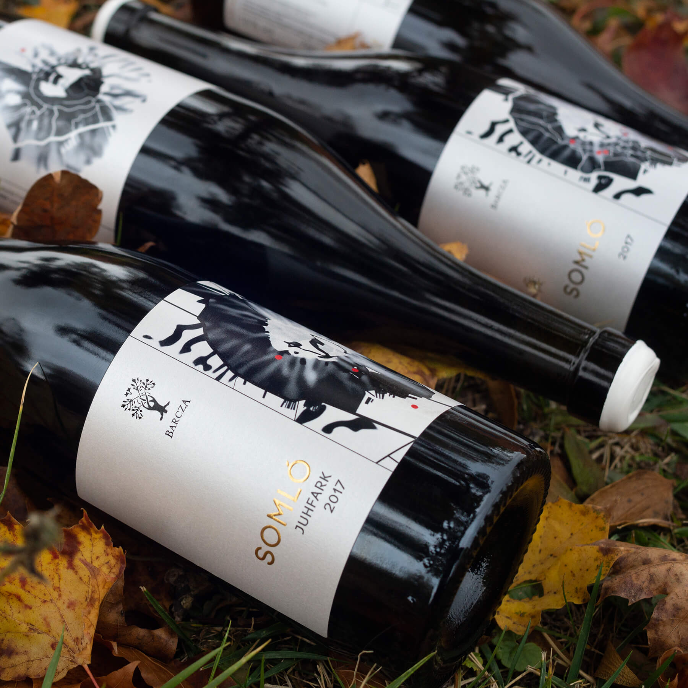

I am a highly focused strategist and designer, and qualified proofreader; adept at taking core messaging and creating concepts by using design elements to communicate ideas that inspire and inform.
I have extensive knowledge of communication design, including concept design, editorial, data visualisation, 3D installation, visual identity, accessible printing and design research.
I am a critical thinker and enjoy creative problem-solving; working on complex design projects that are adopted across a variety of media.
Project within dRMM ArchitectsProject within dRMM ArchitectsProject within dRMM ArchitectsProject within dRMM Architects
BRANDING / EXHIBITION GRAPHICS / INSTALLATION
Project within dRMM Architects - Co:MK:U, collaboration with Philip Dennis (Wilkinson Eyre)Project within dRMM Architects - Co:MK:U, collaboration with Philip Dennis (Wilkinson Eyre)Project within dRMM Architects - Co:MK:U, collaboration with Philip Dennis (Wilkinson Eyre)Project within dRMM Architects - Co:MK:U, collaboration with Philip Dennis (Wilkinson Eyre)
BRANDING / PACKAGING / EDITORIAL
Project within dRMM ArchitectsPhoto by Farid KarimProject within dRMM ArchitectsPhoto by Farid KarimProject within dRMM ArchitectsPhoto by Farid Karim
BRANDING / PACKAGING
Project within dRMM ArchitectsProject within dRMM ArchitectsProject within dRMM ArchitectsProject within dRMM ArchitectsProject within dRMM Architects
BRANDING / EXHIBITION GRAPHICS / EDITORIAL
Project within dRMM Architects
ILLUSTRATION / EDITORIAL
Project within dRMM Architects

Project within dRMM Architects